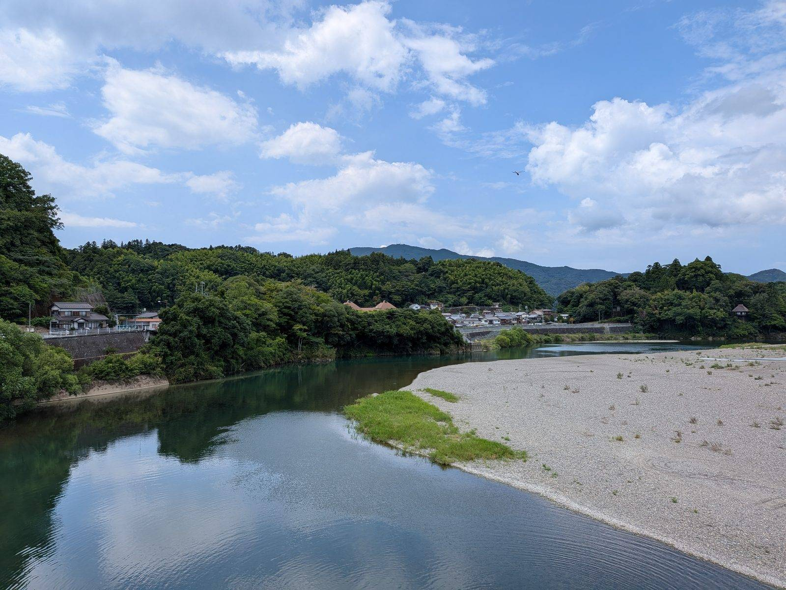

大洲の暮らし ・ 出典: スポーツ庁「地域スポーツクラブ活動体制整備事業」実施報告/大洲市総合教育会議 会議録 ・ 約10分で読める
大洲市の中学生、12年後に45.5％減？肱川で始まった部活動の新しい形

 メモう
メモう
大洲の中学生、12年後には半分近くまで減るって。
そうなると、部活のチームが組めなくなるんだ。
肱川では、カヌーのクラブがその受け皿になり始めてるよ。
3行でいうと調べた資料 5本
- 大洲市の中学生は12年後に45.5%減の推計。合同チームでしか試合に出られない種目がすでにある
- 肱川ではカヌークラブが部活動の受け皿になり、月20回の活動が動いた
- ただし受け皿のはずのスポーツ少年団も、15年で団員1,000人→378人に減っている
スポーツ庁が公表している「地域スポーツクラブ活動体制整備事業」の資料に、大洲市の実施報告が載っていた。中学校の部活動を地域のクラブに移していく国の実証事業だ。
84ページある報告書を最初から読んだのだが、想像していたより数字が生々しかった。
まず、この事業の前提になっている数字
報告書の２ページ目に、大洲市の基本情報が並んでいる。
- 面積 432.12平方キロメートル／人口 39,473人（令和６年４月時点）
- 公立中学校 ８校／公立中学校生徒数 1,043人
- 部活動数 57部活（運動部42、文化部15）
- 部活動加入率 92％（うち運動部68.9％、文化部31.1％）
問題はここからだ。市が示した中学生数の将来推計を、そのまま並べるとこうなる。
1,043人が568人。12年で45.5％減。報告書は理由を「大洲市の想定外の急激な出生数の減少」と書いている。「想定外」という言葉が公式資料に入っているのが目を引いた。
検算しておくと、568÷1,043＝0.5446。減少率45.5％は正しい。
現時点でも、すでに単独でチームを編成できず合同で試合に出場している種目があるという。
運動部で活動している13種目（軟式野球、サッカー、男女バスケットボール、バレーボール、男女ソフトテニス、男女卓球、陸上、水泳）を、８校・1,043人で維持している状態で、この先12年で生徒が半分になる。
教職員側の数字も出ている。市が実施した「中学校部活動の地域移行に関するアンケート」で、部活動を負担に感じている教職員は85.9％だった。
減っているのは中学生だけではなかった
報告書を読み進めて一番驚いたのは、生徒数の推計ではなくスポーツ少年団の推移のほうだった。小学生年代の受け皿の話だ。
| 区分 | 平成21年 | 平成26年 | 令和元年 | 令和６年 | H21→R6 |
|---|---|---|---|---|---|
| 単位団数 | 39 | 41 | 29 | 26 | 33.3％減 |
| 指導者数 | 194 | 142 | 133 | 113 | 41.8％減 |
| 団員数 | 1,000 | 717 | 505 | 378 | 62.2％減 |
15年で団員が1,000人から378人。６割超の減少だ。中学生の45.5％減という推計より、すでに起きているこちらのほうが急激である。
しかも減り方の順番が重要で、団員（62.2％減）＞指導者（41.8％減）＞団体数（33.3％減）の順に減っている。
つまり器（団体）と人（指導者）は残っているのに、中身（子ども）が先に抜けている。
地域クラブに移すという話は、「地域には受け皿がある」という前提に立っている。
だがその地域の受け皿自体が、この15年で縮んできた。部活動の地域移行は、縮んでいる側に荷物を移す話でもあるということが、この表から読める。
大洲カヌークラブ: 肱川と鹿野川ダムが練習場所
大洲市が令和６年度に実証事業を行ったのは、３つの地域クラブ（指導者10人、運営スタッフ２人）だった。
- 大洲カヌークラブ（カヌー）
- おおずスポーツクラブ（軟式野球・サッカー）
面白いのは大洲カヌークラブのほうだ。活動場所は肱川と鹿野川ダム。
実証期間は令和６年８月１日～令和７年２月28日で、月20回程度という頻度で動いている。
指導者の属性が独特で、市・県職員と高校教諭（兼職兼業）。統括責任者１名、指導者４名に加えて、安全管理者１名が別に置かれている。川の上での活動なので、安全管理が独立した役割になっている。
平日は愛媛県立大洲高等学校のカヌー部の練習に参加し、高校教諭や高校生から指導を受けながら、カヌー専用エルゴメーターや体幹・筋力トレーニングを行っていた。
連携先には愛媛県カヌー協会、大洲高校カヌー部（競技）、大洲カヌー同好会（観光）が並んでいる。
参加した中学生へのアンケート結果はこうだった。
参加したい
つながった（カヌー参加者）
「進路選択につながった」の中身も報告書に書いてある。中学３年生になっても引退せず、地域クラブでの活動を卒業まで続けられるため、高校での競技活動へそのまま移行できるという説明だ。
大洲カヌークラブには小学生も在籍しているので、小学生→中学生→高校生と切れ目なくつながる形になっている。
学校部活動が学年で区切られているのに対し、地域クラブには卒業がない。
この「区切りのなさ」が、進路にまで効いているというのは、言われてみればなるほどという結果だった。
ただし、うまくいった話ばかりではない
同じ報告書には、うまくいかなかった記録も残っている。
事業スケジュールの令和６年９月の欄に、こうある。「実証事業参加者募集、保護者説明会の開催 ⇒軟式野球、サッカーの参加者が少ない」。
11月に体験会を実施し、練習が始まったのは令和７年１月だった。
実証期間は２月末までなので、実質２か月しか活動できていない。
カヌーが月20回程度なのに対し、おおずスポーツクラブは月２回程度。同じ「地域クラブ」でも活動量が10倍違う。
参加した中学生のアンケートにも、微妙な結果があった。地域クラブのチームで大会や試合に参加したいか聞いたところ、半分は「練習のみでかまわない」という答えだったという。
報告書は「中学生は、学校部活動での活動がメインであるという思いが強く、『休日の部活動の代わりに地域クラブに参加している』と捉えていると推測する」と分析している。
子どもの側からすると、これは移行ではなく追加なのだ。この温度差が、報告書の中でいちばん正直な部分だと思った。
教員の負担は、実際に減ったのか
顧問の教員５人に対するアンケートもある。結果はきれいだった。
「生徒が地域クラブに参加したことで、業務負担の軽減につながったか」に、５人全員が「つながった」と回答。
理由には「本来の教員の業務に時間が取れた」「休日に休むことができた」が挙がっている。５人全員が次年度以降の継続を希望していた。
一方で「地域クラブで大会等にでられるようにしてほしい」という要望も出ている。
生徒側は「練習だけでいい」、教員側は「大会にも出られるように」。ここでも向きが逆になっている。
ここまでが、部活の受け皿ができたという話。
ここからは、その受け皿が抱えている難しさ。距離の問題が出てくるよ。
一番離れた中学校同士は31.2ｋｍ。地図の問題
報告書には、市内８中学校の相互の距離と所要時間の一覧表が載っている。これが大洲市の地理的な条件をそのまま示していた。
- 最も近い: 大洲南中～大洲北中 2.3ｋｍ（６分）
- 最も遠い: 長浜中～肱川中 31.2ｋｍ（41分）
- 肱川中～平野中 24.4ｋｍ（33分）／長浜中～平野中 22.2ｋｍ（35分）
報告書の結論はこうだ。「１か所に集まって活動することは困難である。中学校をエリア分けし、そのエリア毎に地域クラブの活動を行う方法もあるが、実情からエリア分けも難しい」。
サッカーについては、部活動がある４校すべてから参加があったので、中間地点である徳森公園多目的グラウンドで活動した、という記述がある。
主な移動手段は保護者による送迎で、練習場所が近い場合のみ自転車か徒歩。
地域移行の実務上のボトルネックは、指導者でも施設でもなく「送迎する大人」だ。
報告書は代案として「１つの地域クラブで、各学校のグラウンドを順番に練習場所とし、『来れる場所での活動のときに参加する』というような柔軟な実施方法」も検討する、と書いている。
お金の話: 年2,000円が、いくらになりうるのか
ここが今回いちばん重要な数字だと思った。実証事業の参加費は、公平性の観点から全クラブ一律で年間2,000円（保険料込み）に設定されていた。
保険はスポーツ安全保険で、生徒１人あたり年800円、指導者１人あたり年1,850円。
つまり参加費2,000円のうち800円は保険料で、残り1,200円しか活動費に回っていない。
では実際にはいくらかかるのか。報告書は３パターンの受益者負担額を試算している。
| 受益者負担の考え方 | カヌー | 軟式野球 | サッカー |
|---|---|---|---|
| 指導者の謝金のみを負担（申込20名） | 1,097円 | 2,400円 | 1,320円 |
| スポーツ活動費の全額を負担（申込20名） | 2,975円 | 3,801円 | 4,684円 |
| 全額を負担（申込20名） | 2,975円 | 6,376円 | 7,522円 |
| 全額を負担（申込60名） | 992円 | 2,125円 | 2,507円 |
いずれも月額である。実証では年2,000円だったものが、全額自己負担にすると月7,522円（サッカー・20名の場合）になりうる。年額に直せば９万円を超える。
一方、保護者アンケートの回答は「月額2,000円以下の負担であれば参加してもよい」が最多で、「費用がかかるなら参加しない」という意見もあった。
表を横に見ると、もう一つ分かることがある。申込者が20名から60名に増えると、１人あたりの負担は３分の１になる。
サッカーなら7,522円が2,507円だ。ところが冒頭に戻ると、大洲市の中学生は12年で45.5％減る見込みである。
人数が減れば１人あたりの負担は上がる。この事業が向き合っている構造は、そういう形をしている。
報告書自身も認めている。「一定の人数の参加がなければ賄えないことになり、持続可能性に視点を置いた時にあやうい。低廉な受益者負担を求めたうえで、少なからず行政の支援が必要である」。
で、実証のあとはどうなったのか
令和６年度の実証で終わった話ではない。令和７年度第２回大洲市総合教育会議の会議録（令和８年２月19日）を読むと、続きが書いてあった。
まず国の枠組みが変わっている。スポーツ庁・文化庁の整理では、令和５～７年度が「改革推進期間」、令和８年度からは「改革実行期間」に入る。
令和７年12月には新しい総合的なガイドラインが策定された。実証で試す段階から、実際に動かす段階に移ったということになる。
大洲市の令和８年度の動きとして、会議で説明されたのは「地域おこし協力隊活動事業」だった。
都市部から住民票を移して１～３年活動し、４年目以降の定住を目指す国の制度で、特別交付税措置が適用されるため市の財政負担が少ないという説明がついている。
この協力隊を、部活動の地域展開の担い手として公募するという構想だ。
委員からは、文化部についての質問が出た。「21ページの表によると、吹奏楽が１件あるものの、スポーツ系の部活が中心だと見受けられます。美術部等、他の文化系の部活も同じように頑張っていると思います」。
答えはこうだった。文化部については「最も課題の大きい吹奏楽部を検討すべきとの意見をいただいていますので、まずは吹奏楽部の検討を優先」。
加えてスポーツ振興課長が「少人数の部活動（例…パソコン部）など、この地域展開には一定の限界があるのも事実です」と、限界そのものを認めている。
市長も釘を刺していた。「地域おこし協力隊員が着任すればすべて解決するというようなことではないと思いますし、地域おこし協力隊員の着任時期がズレたらどうなるのかということもあります」。
もう一つ、実証事業の対象外でも動きが出ている。報告書によるとバレーボールや柔道などの種目でも、地域の指導者が地域クラブを創設して中学校体育連盟に登録し活動しているという。
ただし市としての「地域クラブ」の要件や基準が整備できていないため、実態やニーズの把握ができていない状態だとも書かれている。
制度が追いつく前に、現場が先に動きはじめているということになる。
なお、地域クラブとは別ルートで「部活動指導員配置事業」も令和８年度の新規事業に入っている。
学校の部活動に外部の指導員を配置するもので、時給1,203円（最低賃金と同額）、１日２時間という設定だ。
すでに市内３中学校で５名がボランティアの外部指導者として平日16～18時に指導している実績があり、それが根拠になっている。この事業の中身は総合教育会議の記事のほうで詳しく書いた。
「肱川あらし」で知られる肱川が、今度はカヌーで中学生の部活動を支える場所になっている。
人口減少という重い話の中で、地域の資源（川）を活かした前向きな取り組みがあるのは、大洲らしいと思う。
ただ、報告書を最後まで読んだ実感としては、この事業はまだ「できるところから」の段階だ。
カヌーは月20回動いたが、サッカーと軟式野球は２か月・月２回だった。
子どもは「試合には出なくていい」と言い、教員は「試合に出られるようにしてほしい」と言う。
参加費は年2,000円だが、実費なら月7,522円になりうる。
そしてスポーツ少年団の団員は15年で1,000人から378人になった。
受け皿になるはずの地域が、先に細っている。この数字を見たあとだと、45.5％という中学生の減少率も、単独の問題ではないことがわかってくる。